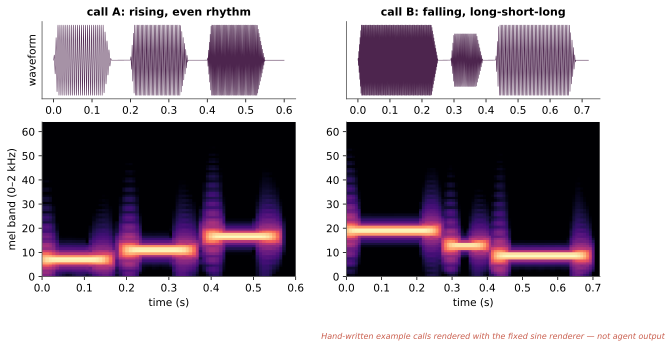

birds calling, 1630 → agents calling, 2026

[ 01 · just started ]
The First Song
When several agents have to share one channel, do their calls move apart, or do the listeners learn to hear through the mix?
A sender sees where the food is and answers with a few notes. A listener hears only a noisy recording of those notes and has to act on it. Nothing rewards sounding musical, so any structure in the calls has to come from the need to be understood. The Chorus puts two, then three, then four pairs on one channel and compares them with pairs who each have a channel to themselves. I wrote the tests before the first run.
chorus · resultsjust started
tests written before runs2 → 3 → 4 pairs